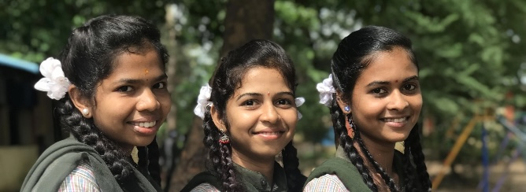
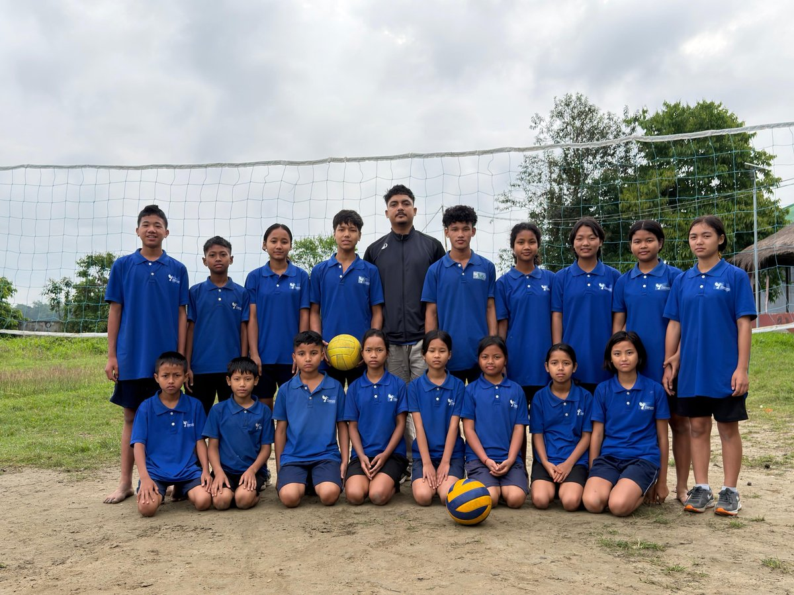
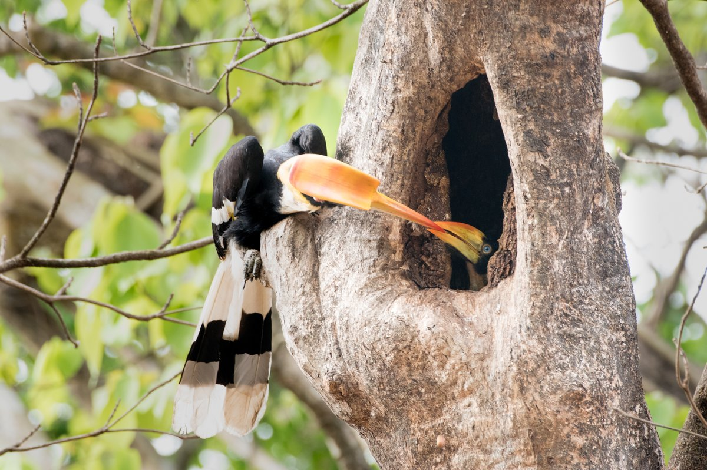
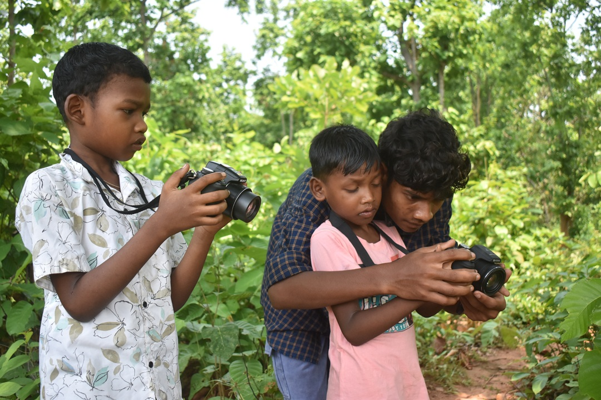
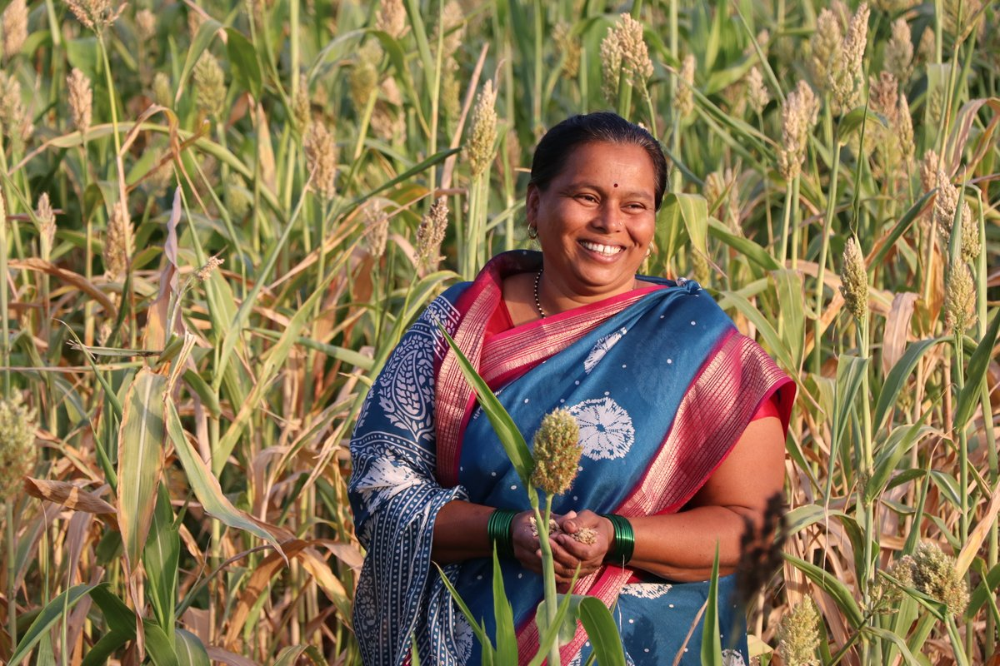
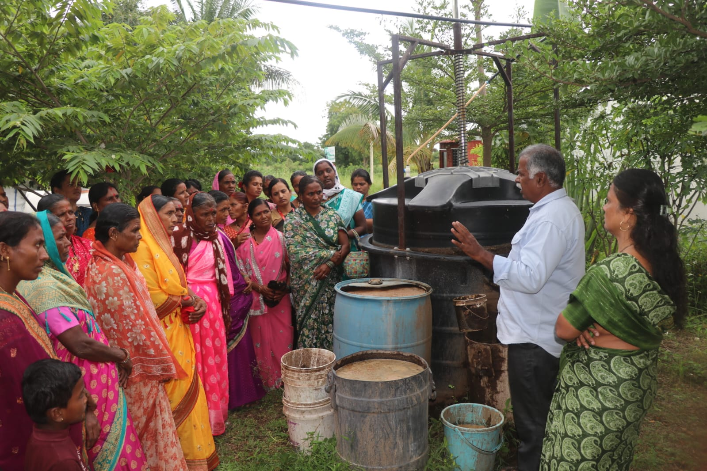
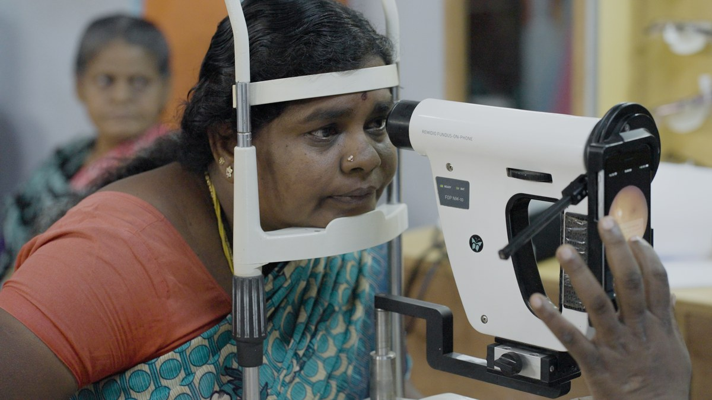
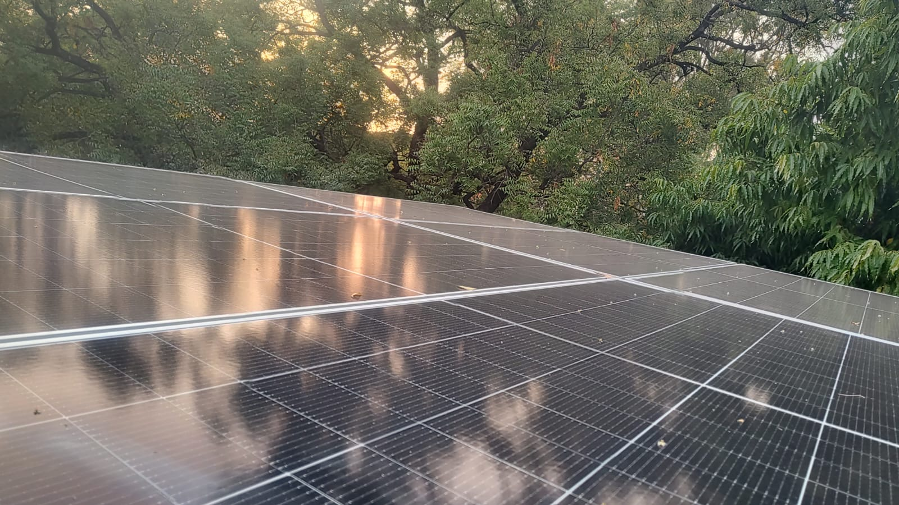

Fields of Work
At RAFT, we believe that meaningful change begins with the courage to imagine a different future. We support ideas that look at problems differently, trust communities as drivers of progress, and use knowledge to open new pathways for impact.

1. Education
Enable professional education and quality learning for girls ensuring economic independence, transforming them into future leaders, and improving opportunities in remote communities.
2. Biodiversity & Conservation
Protect biodiversity, wildlife habitats, and critical ecosystems. Support community-led conservation through science-based solutions.
3. Livelihoods
Drive women’s economic empowerment. Build market-relevant skills leading to meaningful careers, higher incomes, and entrepreneurship.
4. Tech for Good
Apply technology, AI, and innovation to address pressing social challenges. Support scalable startup ecosystems and accelerate the diffusion of technology to underserved communities.
5. Disability Inclusion
Expand access to education, employment, and services. Enable skills, livelihoods, and independence while promoting dignity, inclusion, and participation.
Our Grantees
Through trust-based grantmaking, flexible funding, and sustained collaboration, we back organisations that turn vision into lasting impact.

Aatmaja Foundation
Pune | Girls from socioeconomically disadvantaged backgrounds | Grant: 2015 – Ongoing aatmaja.orgThrough 4 strategic programs, Aatmaja Foundation builds confidence, life skills and professional capabilities to create empowered and self-reliant women. Udaan Program: Long-term educational support guiding girls through scholarships, mentorship & skill-building to become independent professionals. Aasha Program: Equips girls with job-ready vocational skills across healthcare, technology, hospitality & wellness for faster employment. Girls in STEM: Builds girls' confidence and interest in STEM through hands-on workshops, expert talks, mentoring & industry exposure. Multi Skill Foundation Course (MSFC): Practical vocational training across engineering, electrical, plumbing & agriculture — building technical skills & career readiness.

Ayang Trust (The Hummingbird School)
Majuli, Assam | Children from Mising Tribe | Grant: 2025 – 2029 thehummingbirdschool.inThe Hummingbird School, under Ayang Trust, operates at the intersection of education and resilience in the flood-affected communities of Majuli, which continue to grapple with poor connectivity, fragile infrastructure, and deep-rooted socio-economic challenges. The Hummingbird School has been committed to ensuring access to quality education for these children. The pedagogy and the curriculum deviate from conventional learning methods, emphasizing experiential learning, inquiry-driven and context-relevant learning. This has allowed the children to connect their education with their lived realities while developing their curiosity, creativity and critical thinking.

Sahyadri Sankalp Society
Ratnagiri | Malabar Pied Hornbill, Great Hornbill, Malabar Grey Hornbill | Grant: 2025 – 2028 sahyadrisankalpsociety.orgThe Western Ghats is home to three iconic Hornbill species. These birds are critical seed dispersers, shaping forest regeneration and structure. However, their survival is threatened by loss of nesting and fruiting trees, forest degradation and fragmentation and lack of public awareness. The project focuses on a landscape-level conservation approach emphasizing nest protection, habitat restoration and community involvement.

Human & Environment Alliance League (HEAL)
Jhargram, West Bengal | Boys from Hunting Communities & Wildlife | Grant: 2026 – 2027 healearth.inIn Southern West Bengal, over 40 mass hunting festivals are documented annually across seven districts — drawing up to 20,000 armed participants and killing thousands of wild animals in a single day. These are not subsistence hunts. They are organised bloodsport. In these villages, boys are handed catapults as young as age three. By adolescence, participation in mass hunts is a rite of masculinity and belonging. The solution starts with children. When boys in these communities are given cameras, mentorship, and recognition, their relationship with nature shifts fundamentally. Catapults to Cameras — a critically acclaimed documentary by wildlife filmmaker Ashwika Kapur and HEAL's field team — followed five adolescent boys who voluntarily gave up their catapults and became wildlife enthusiasts and conservation ambassadors. The film earned international recognition, turning a grassroots experiment into a global conversation. This project scales that model.

Manndeshi Foundation
Satara, Sangli, Solapur, Pune, Maharashtra | Women farmers | Grant: 2026 – 2027 manndeshifoundation.orgFarmers have largely relied on traditional practices, even though agriculture is a highly technical and scientific field. By focusing on soil, we intervene at the very beginning of the crop cycle, where the foundation of productivity is set. The project aims to strengthen the capacity and resilience of 1,500 farmers by improving soil health knowledge, introducing climate-smart agricultural practices, and increasing access to emerging agricultural technologies. Through soil testing services, advanced courses on horticulture farming and knowledge sessions on agri-tech, artificial intelligence in agriculture, climate literacy, and scientific farming methods, the project will equip farmers with the tools and information needed to make data-driven decisions.

Gokhale Institute of Politics & Economics
Mahad Taluka, Raigad district, Maharashtra | Tribal & marginalized communities | Grant: 2026 – 2027 gipe.ac.inMahad Taluka in Raigad district faces four compounding challenges: 1. Socio-Economic Vulnerability: Small farmers and landless labourers remain largely excluded from the formal economy. 2. Ecological Degradation: Biodiversity loss and erosion of traditional ecological knowledge. 3. Climate & Resource Stress: Growing water insecurity and soil degradation, worsened by poor waste management and inefficient agricultural practices. 4. Institutional Gaps: Local Gram Panchayats lack the technical capacity to implement key mandates. The Shashwat Vikas Kendra will serve as a localised hub addressing these challenges across three pillars: Natural Resource Management, Livelihood Security and Village-level Governance.

Shantilal Shanghvi Eye Institute
M/E Ward, Mumbai, Maharashtra | Residents | Grant: 2026 – 2027 ssei.careMaharashtra's rate of blindness and visual impairment exceeds the national average. In Mumbai's M/E ward, one of the city's most densely populated slums, nearly 2% of residents are blind and 13% live with visual impairment, yet 66% of that blindness and 84% of that impairment is treatable. The program takes a pocket-based approach, bringing awareness, community engagement and screening directly into neighborhoods, with at least six months of follow-up to build lasting eye-health habits. ’Sakhis’, women from the community are trained on two cutting-edge portable tools: Remidio's split lamp for a thorough anterior eye exam, and a handheld fundus camera that delivers high-quality retinal screening in under a minute. The goal is to screen and treat preventable causes of blindness — cataract, uncorrected refractive error, glaucoma, and diabetic retinopathy, while building a sustainable model through links to existing government schemes and strengthening the community's long-term access to and habits around eye care.

Venture Center
Pune, Maharashtra | Incubated startups & ecosystem | Grant: 2025 – 2026 venturecenter.co.inRAFT supports two initiatives at Venture Center: the Center of Excellence (CoE) for Clean Energy & Green Hydrogen, and Solar Panel Installations. The CoE focuses on energy generation and new fuels (solar, wind, biomass, green hydrogen), energy storage (batteries, supercapacitors), and end-use sectors (mobility, industrial power, urban energy). It offers services and training programs to startups and stakeholders in the clean energy ecosystem. India's commitments to COP26 and UNFCCC include reducing GDP emissions intensity by 45% and achieving 50% non-fossil fuel energy capacity by 2030 — these projects are a significant step toward building a self-sufficient and innovative clean energy ecosystem in India.